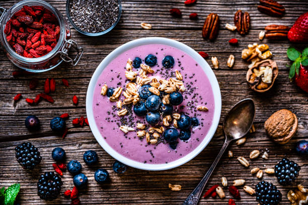

üåû Trending Fruit Recipes

1. Tropical Fruit Salad with Honey-Lime Dressing
A vibrant mix of mango, pineapple, kiwi, and strawberries tossed in a zesty honey-lime glaze.
Perfect for picnics and summer brunches!
2. Berry Chia Overnight Oats
Fuel your morning with layers of creamy oats, mixed berries, and chia seeds. Prep it in 5
minutes, enjoy it anytime!
3. Peach & Basil Flatbread
A sweet and savory twist featuring fresh peaches, ricotta cheese, and basil on a crispy
flatbread crust.
4. Watermelon Feta Skewers
Refreshing, salty, and sweet. These colorful bites are always a party hit.
üçå Smoothies & Sips
Sunrise Smoothie Bowl Packed with bananas, orange juice, and a hint of ginger. Top with granola
and coconut flakes.
Berry Mojito Mocktail Fresh mint, lime, and muddled berries. A zero-alcohol stunner!
üç∞ Fruit-Forward Desserts
Apple Cinnamon Galette Rustic, flaky, and full of warm apple goodness.
Grilled Pineapple Sundaes Caramelized pineapple with a scoop of vanilla and a drizzle of rum
sauce.